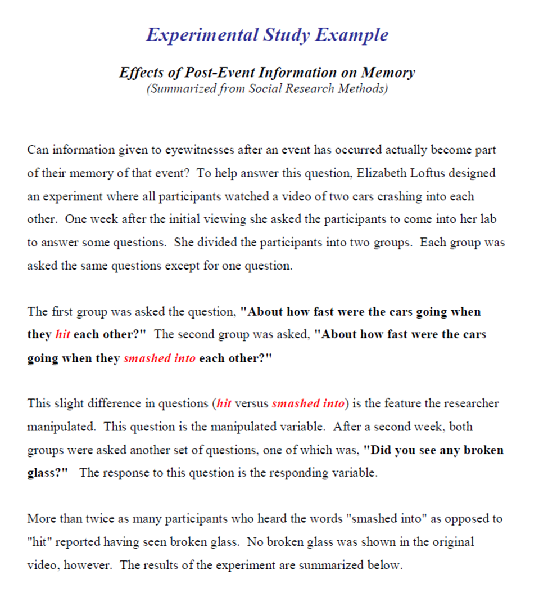
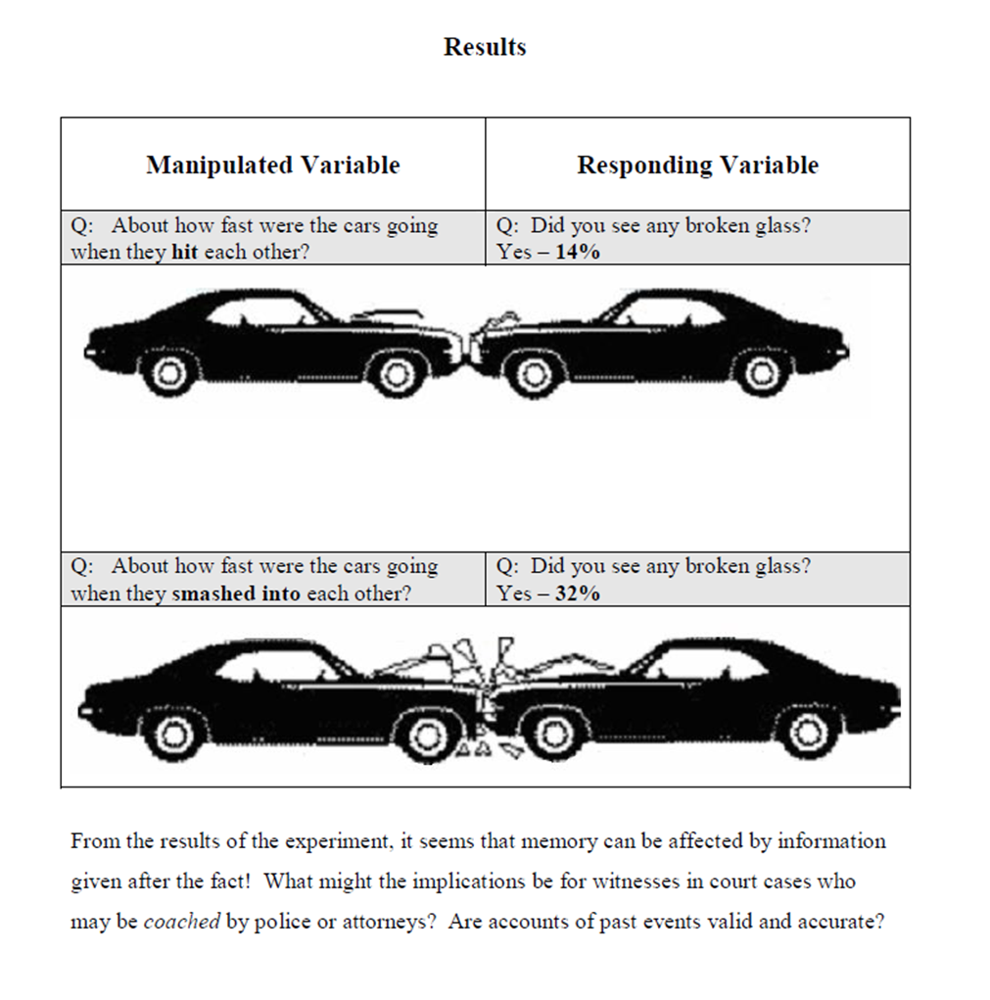

The experimental method is the only method that requires researchers to use the scientific method. The researcher manipulates a variable (anything that can vary) under highly controlled conditions to see if this produces (causes) any change to a second variable. The variable that the researcher manipulates is called the independent variable or manipulated variable. The variable measured for change is the dependent variable or responding variable. More information on variables and the scientific method is found in Section Three of this module.
Strengths of Experimental Research: The main benefit of this method is that cause-and-effect relationships can be explored. To accurately determine cause-and-effect relationships, researchers must be sure that the manipulated variable is the only variable that has an effect on the responding variable. To do this, all other variables that might also effect the responding variable must be held constant. The variables that are held constant are called controlled variables. Controlled variables are unchanged (equivalent, the same) in each test or trial in an experiment.
By rigorously controlling the procedure, researchers have greater confidence when stating that the observed changes in the responding variable were caused by the changes in the manipulated variable.
Limitations of Experimental Research: A major limitation of this method is that it can be used only when conducting an experiment is practical and ethical. A psychologist, for example, might want to know if a couple's method of disciplining their children has an effect on the behaviour of their children. Having parents discipline their children in a certain way to see how their child's behaviour is affected is neither practical nor ethical.
A second limitation of the experimental method relates to the fact that the studies are conducted in a laboratory. Laboratories are used so that control can be maintained. Life, however, does not occur in such controlled conditions and behaviours in labs may not reflect what actually happens in the real world.
Please review the example of Experimental Research that follows:


manipulated variable: the variable the researchers changes in an experiment. (This variable is also known as the independent variable.)
responding variable. the variable that is measured for change in an experiment (This variable is also know as the dependent variable.)
controlled variables: are variables that are kept constant or unchanged in each test or trial of an experiment(this link opens in a new window/tab)